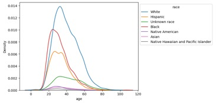
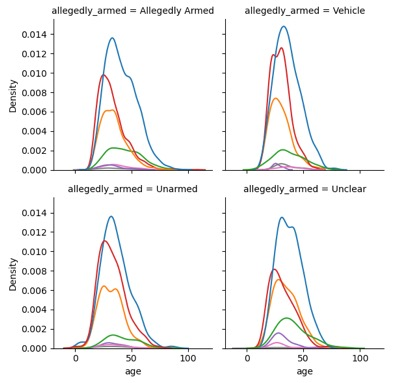
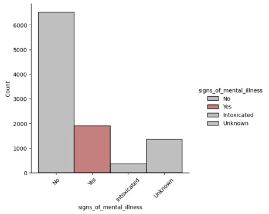
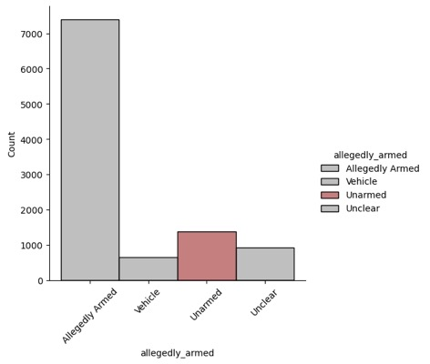
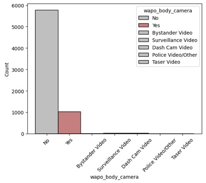
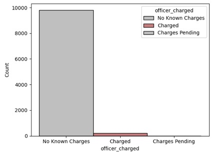

Table of Contents
Exploring Violent Encounters with Police
through Data Visualization
4.1: Police Violence
Frequency by Age and Race
4.2: Police Violence
Frequency by Age and Race and Armed Status
4.3: Police Violence
Frequency by Mental Health Category
4.4: Police Violence
Frequency by Armed Status
4.5: Police Use of Body
Cameras in Violent Incidents
4.6: Charges Brought
Against Police after Violent Encounters
Exploring Violent Encounters with Police
through Data Visualization
Aaron Davis
University of Colorado at Boulder
M.S. in Data Science
aaron.davis@colorado.edu
December 3rd, 2022
Use of violence by police in the United
States is a timely topic, particularly given the death of George Floyd in May
2020. Tragedies like these must drive a
critical examination of use of force by police in the US. Solutions cannot be offered unless the
problem is understood thoroughly. The
motivation of this project is to identify concerning trends in use of police
force so that corresponding solutions for each concerning trend can be
proposed. The goal is to ultimately
reduce use of police force, because we can all agree that less violence is
better.
Exploring this problem is particularly
important because people too often let issues divide them across political
party lines when the issues in question have real and dramatic impacts on
people and their families lives and legacies.
Police violence is one of these issues, and we ought to be working our
absolute hardest to minimize all violence to prevent unnecessary physical and
mental harm to people who have encounters with the police. Follow the data, not a party line.
The goal of this exploration is to
develop insight on what factors police departments in the US should focus on
handling better - whether that means improving mental health services, for
example, or focusing on recognizing and decreasing discrimination against
protected groups.
Specifically, we’re answering the
question “what trends in use of force by police in the US appear to be
problematic?”. To be clear, our goal is
not to provide solutions in this report.
Instead, we’re working to ensure that we really intuitively
understand the problems represented in the data so that the next step of
identifying practical and efficient solutions can be done.
MappingPoliceViolence.org
provides an automatically updated dataset that includes police violence records
from 2013 up until recent months (most recent datapoint is from 8/8/2022, as of
9/29/2022) in the USA. With over 10,000
records from the last 9 years, this dataset seems to be very comprehensive,
both in terms of number of records and number of features. Features of interest in this dataset include
victim age, gender, race, date of death, location of incident, and cause of
death. There are also additional
features that may be of interest when trying to identify and report on
concerning trends.
The first step we plan to take is to
clean the data by removing features that aren’t conducive to creating
visualizations, like the “circumstances” feature which provides a plain text
description of the circumstances surrounding the incident. We’ll also remove features that contain
easily identifiable personal information, like victim name, photo, or news
article links.
Next, we want to select features that
have a low percentage of missing values.
If we skip this step, then our final results
may be inaccurate if certain subsets in our population have disproportionately
higher missing value count for certain features than other subsets of the
population do.
Third, we will calculate information
like correlation between features. While
this information will not appear in this report, it will be useful in helping
us decide which plots might have the most interesting results to show. This step is helpful, because we don’t just
want to show plots… we want to show insightful plots (i.e.
plots that show some unexpected pattern or provide confirmation for an expected
pattern).
Finally, we will create plots. Our plots will likely be focused on count
data (summarizing number of people with known mental health issues who have
died in incidents with police, for example), or proportion data (for instance,
what percent of the total number of violent run-ins have been with a particular
race, as compared with the percent of the total population of that area that
race makes up).
In the plot below, we see that density
of police violence when broken out by race appears to peak earlier for black
people than for people of other races.
This seems to indicate that younger black people are at more risk of
police violence relative to people of other races. A similar but slightly less pronounced trend
exists for younger Hispanic people.

Figure 1: Age of Victim Broken Out by
Race
Is this trend an indication of racial
bias in use of force by police? We
provide insight into the answer for this question by breaking this plot out
further by the reported status of whether or not the
individual who experienced police violence was armed during the incident. (Legend from this plot carries over to all
other plots broken out by race.)
Figure 2 appears to show that the bias
towards black people experiencing police violence at a younger age relative to
other races is independent of whether the victim is armed, unarmed, or whether
it is unclear. In other words, police
violence towards younger black people does not seem to be dependent on
variation in whether or not the victim is armed. Racial bias, then, seems like the most
reasonable likely next explanation. This
discovery ought to shift the focus towards recognizing and removing racial bias
in police departments across the nation.

Figure 2: Figure 1 Broken Out by Armed Status
We’ve seen from figures 1 and 2 that
there seems to be a relationship between race and age of violent encounter,
particularly for black people in the US, and this relationship does not seem to
depend on whether the victim is armed, so (to reiterate) the next reasonable
step would be to examine racial bias in US police forces.
What about the relationship between
violent encounter with police and mental health of the victim? Figure 3 shows a
concerning trend. Mainly, the
visualization appears to show that almost 20% of the violent encounter in our
dataset occurred with people with apparent signs of mental illness.
Could these violent encounters been
prevented if each police department had allocated more funds towards training
officers in how to deal with different mental health conditions? This analysis will not answer the question,
but it does show that the question is extremely relevant to significantly
reducing overall count of violent encounters.

Figure 3: Count of Victims in Each
Mental Health Category
In this next plot, we see that a large
portion of the victims of police violence in the past 9 years have either been
unarmed or it has not been clear that they were armed. These two groups appear to compose
approximately 20% of all deaths by police violence. This is again an extremely concerning
trend. It is possible in some situations
that violence needs to be met with violence to help keep the public safe but
using violence against unarmed civilians seems to be a questionable practice at
the very best, and at worst an egregious misuse of power by a someone who ought
to be a public servant.

Figure 4: Count of Victims in Each
Category of Armed
This trend seems to
indicate that another significant opportunity to reduce violence in police
encounters is to spend funding focusing on ensuring officers’ assessments of
the threat level in given situations match the actual threat level. A very small fraction (obviously zero is
better) of violent encounters with police should be with unarmed civilians, and
when a number that should be close to 0% is close to 20% there’s a clear
problem that needs to be fixed.
How frequently are violent encounters
recorded? This question is particularly
important because having recordings of violent incidents is in the best
interest of anyone interested in knowing exactly what happened without the
subjectivity inherent in reviewing witnesses.
Figure 5 shows another rather concerning trend.

Figure 5: Count of Recording Category
We see here that around 85% of violent
encounters are not recorded at all.
Around 15% of violent encounters are recorded on police body cameras,
and a very small percentage of recordings come from other sources. And this is only the subset of the data that actually recorded whether or not a body camera was
used. This plot seems to show an issue
with lack of objectivity in data about what actually happened
in violent incidents, because recordings are the closest thing we could have to
objective evidence, currently.
This problem could either be rooted in
a lack of body cameras for police departments (which can be fixed with better
funding allocation), or it could be rooted in lazy or malicious misuse of body
cameras, which ought to be disciplined.
Again, our goal in this report is not to identify solutions, but rather
we’re trying to understand the roots of the issues the data shows about violent
police encounters.
Figure 6 seems to show another
problematic trend. As we’ve seen
earlier, around 20% of violent encounters were with unarmed individuals, and
around 20% of violent encounters involved people with apparent mental health
issues. But the number of charges
brought against officers involved in these violent encounters is closer to ~2%,
as seen in Figure 6. Note that not all
“Charged” officers were convicted, either.

Figure 6: Count of Charges Brought Against Officers After Violent Incidents
Just as a point to note, not all
officers involved in violent incidents necessarily need to be charged. Some police officers are put in intractable
situations where they need to make a difficult decision to protect others… after
all, it’s their job. But the proportion of
officers charged seems to be oddly small compared to the proportion of unarmed
people involved in violent incidents with those officers. That is the point of this figure.
The question this project was trying to
answer is “what trends in use of force by police in the US appear to be
problematic?” with the intention of identifying the problems so that solution
could be formulated as a next step. The
visualizations in this report show clearly that police forces seem to have a
racial bias that expresses itself through younger black people experiencing
violence relative to other races.
Additionally, violent encounters with
mentally ill people seem to offer an avenue to reduce violent encounters by
improving quality and availability of mental health care and intervention. Violent encounters with unarmed individuals
seem to offer an even clearer path to reducing violent encounters by
intentionally avoiding use of excessive force.
Next, we saw a remarkable lack of hard
evidence in the form of recordings of violent encounters. Increasing use of police body cameras and
holding officers accountable for disabling cameras offers an opportunity to
ensure we hold all parties involved in a violent incident accountable to the
degree they were responsible for the aggression.
Finally, we saw a trend that very few officers involved in violent incidents are ever charged relative to the number of unarmed individuals involved in violent encounters every year. This discrepancy is concerning and could perhaps be mitigated by increasing use of body cameras and recording transparency.